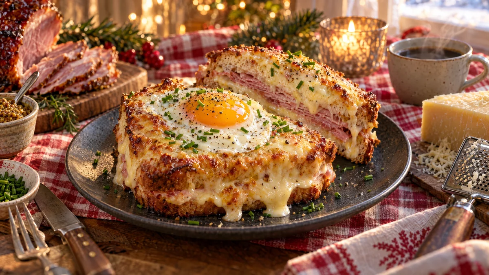

RESTFEST · RECEPTSmörgås · Frukost & brunch
Croque madame på julskinka med senapsbéchamel
Julskinkan som aldrig tar slut, några skivor bröd och en bit ost. Smörgåsarna fylls med skinka och senapssås, täcks med riven ost och gratineras gyllene och bubblande i ugnen. Ovanpå vilar ett stekt ägg med lysande gula. Den franska caféklassikern är som gjord för annandagen.
- Förberedelse
- 15 min
- Tillagning
- 20 min
- Portioner
- 4
- Nivå
- Nybörjare
 Det här behöver du
Det här behöver du
JÄMFÖRT MED DIN KYL
Tryck på + vid det du behöver köpa.
Senapsbéchamel
Smörgåsar
Topping
Gör så här
- Sätt ugnen på 225 grader. Klä en plåt med bakplåtspapper.
- Gör béchamelsåsen. Smält smöret i en kastrull, vispa ner mjölet och låt fräsa i 1 minut. Vispa i mjölken lite i taget och låt sjuda under omrörning i 3–4 minuter, tills såsen är tjock och slät. Rör ner senap, salt, muskot och den rivna osten.
- Bred smör på ena sidan av 4 brödskivor och lägg dem med smörsidan nedåt på plåten.
- Bred ett tunt lager béchamel på brödet och lägg på skinka och hälften av den rivna osten. Lägg på resten av brödskivorna.
- Bred resten av béchamelsåsen över smörgåsarna, ända ut i kanterna, och strö över resten av osten.
- Gratinera i mitten av ugnen i 10–12 minuter, tills osten bubblar och har fått gyllenbruna fläckar. Slå på grillen de sista 2 minuterna för extra färg.
- Stek äggen i smör på medelvärme medan smörgåsarna är i ugnen, tills vitan har stelnat men gulan är flytande.
Dekoration och servering
- Lägg ett stekt ägg mitt på varje smörgås, så att gulan blir kronan.
- Strö över gräslök och nymald svartpeppar.
- Skär en smörgås diagonalt, så att lagren av skinka och ost syns.
- Servera med en krispig grönsallad och lite extra julsenap vid sidan.
- Utan ägget heter den croque monsieur, och är lika god.
Mått och ugnstemperaturer
Måtten är svenska (dl, msk, tsk, krm). Ugnstemperaturerna gäller vanlig ugn med över- och undervärme; med varmluft, sänk med 20 grader.